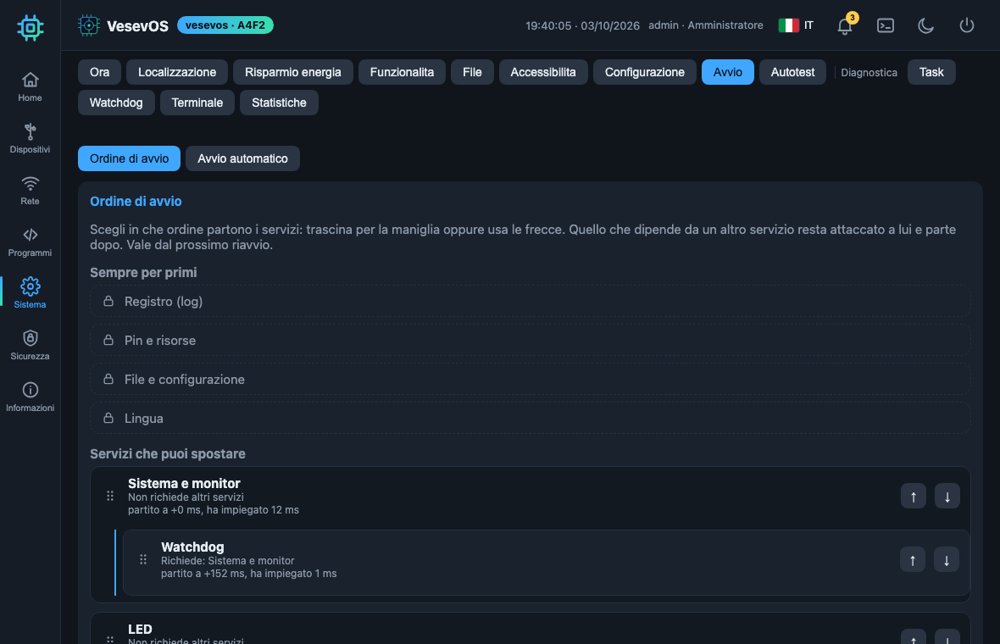
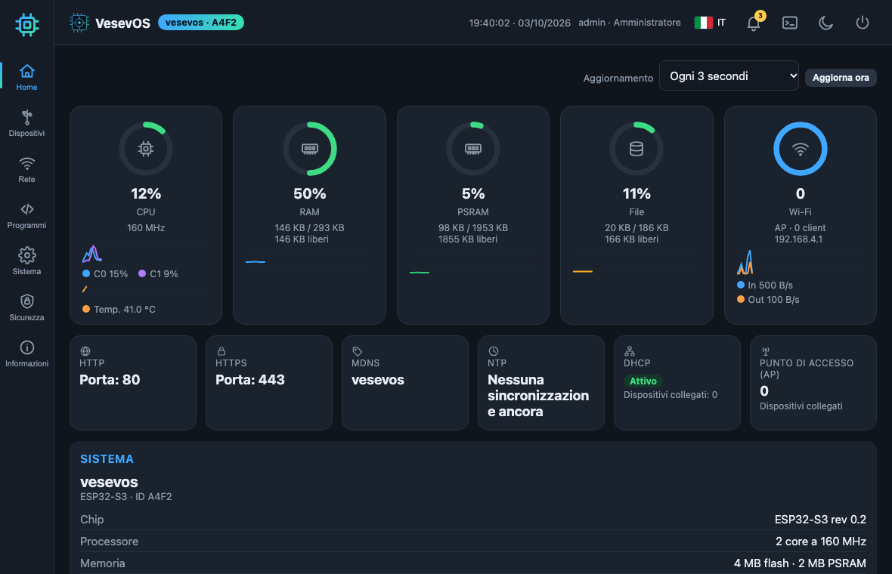
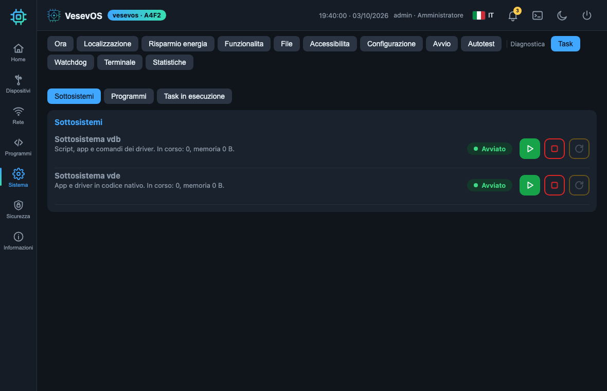
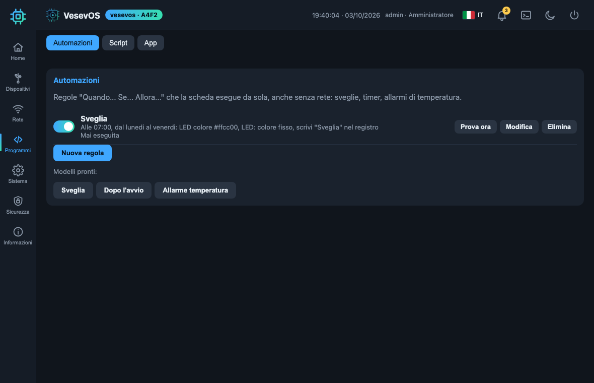
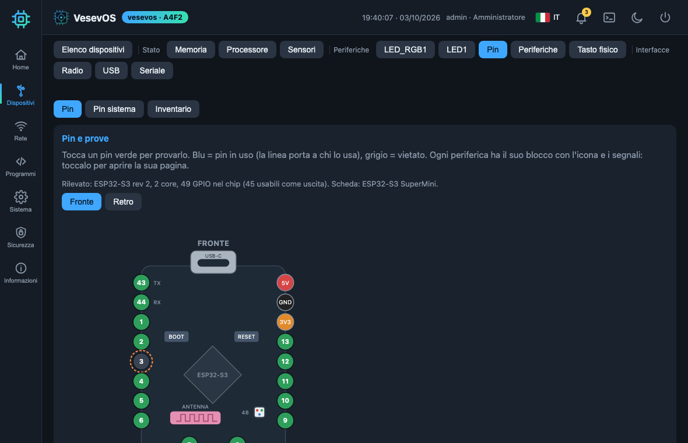
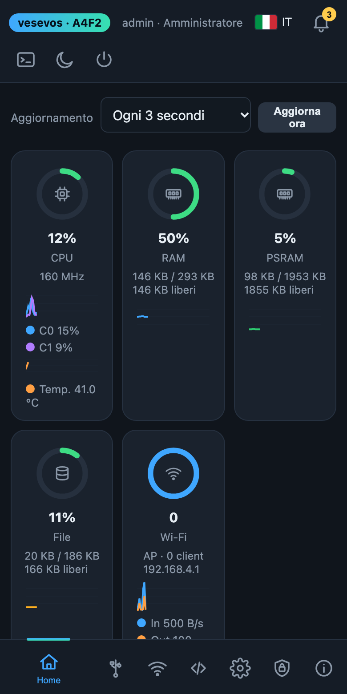

Ordina l'avvio dei servizi
Trascina i servizi per la maniglia o usa le frecce: quello che dipende da un altro parte dopo di lui.

Versione 1.8.24c, ora anche per ESP32-C6
Pagina web, shell, driver e programmi sulla tua scheda: si apre dal browser, parla quattro lingue e funziona senza cloud né account.

Apri Task dal browser: sottosistemi e programmi in esecuzione sono lì, con i pulsanti per avviare, fermare e riavviare.

Scrivi una regola in tre parti: quando succede qualcosa, se vale una condizione, allora la scheda agisce, anche senza rete.

Alla prima accensione parte l'installazione guidata: scegli lingua, password e rete, un passo dopo l'altro.
Trascina i servizi per la maniglia o usa le frecce: quello che dipende da un altro parte dopo di lui.

Tocca un pin verde per provarlo: blu è in uso, grigio è vietato. Lo schema c'è sul fronte e sul retro.

Premi BOOT, collegati alla rete VesevOS e apri 192.168.4.1: poi scegli la password e segui la guida.

VesevOS gira anche su ESP32-C6. Pagina, manuale, lingue e licenze sono file propri sulla scheda, ognuno controllato con SHA-256.
ESP32-S3 ed ESP32-C6. L'installazione dal browser è pronta per la S3; la C6 si aggiorna con il file.
Sì. Pagina, manuale e lingue stanno sulla scheda.
Con Aggiorna tramite recovery o con Carica da file.
Italiano, inglese, spagnolo e tedesco.